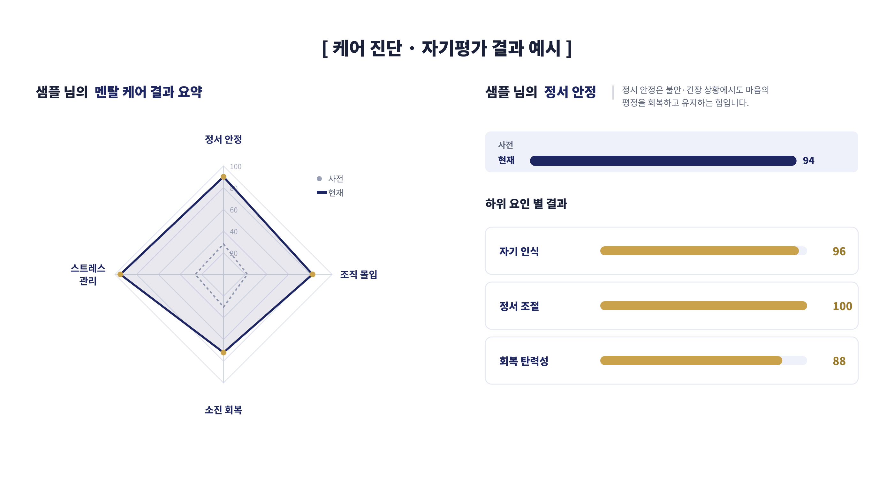
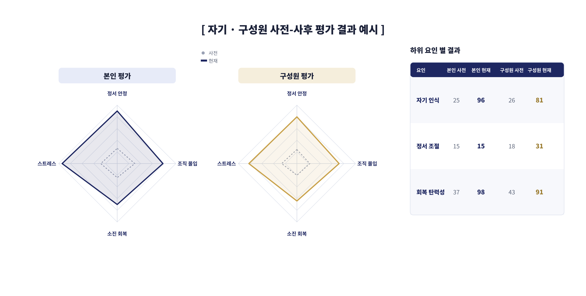

OmniView for Business · 조직 멘탈 케어
구성원의 번아웃과 이탈을 조직 차원에서 선제적으로 관리하기 위해, 정서·소진·몰입을 데이터로 진단하고 상시 케어로 연결하는 프로그램입니다.
상시 체크인으로 구성원 상태를 조기에 감지
소진 신호를 데이터로 포착하고 선제 개입
관계·소속감 기반의 조직 몰입도 관리
케어 진단 4영역
불안·긴장을 다루는 정서 조절력
번아웃 신호를 감지하고 회복하는 힘
업무 압박에 대한 대처 역량
관계·소속감 기반의 몰입도
진단 영역별 강·약점 기반으로 개인별 맞춤 케어를 설계합니다.
케어 종료 후에도 지속 관리를 위한 팔로업 전략을 수립합니다.
사전·사후 진단으로 정서 상태의 변화 추이와 효과를 확인합니다.
다면 진단으로 리더–구성원 간 인식 차이를 확인하고 개입 우선순위를 정합니다.
진단 결과 예시
사전·사후 비교로 케어의 효과를 검증하고, 본인 평가와 구성원 평가를 교차해 리더가 놓치는 사각지대까지 확인합니다.


비밀 보장
1:1 상담은 익명으로 진행되며, 회사에는 최소 인원 기준을 충족한 익명화된 조직 단위 지표(대시보드)만 제공됩니다. 심리적 안전이 보장될 때, 구성원은 솔직해집니다.